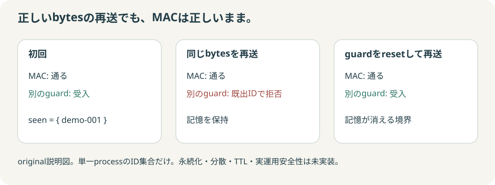

まず予想：改ざんと再送は、同じ拒否になる？
1つずつ条件を変え、raw bytes・再計算tag・2種類の判定を見比べてください。公開fixtureのkeyを使用し、実resource操作や外部送信はしません。
操作は保存原票のreplay
選択時に新たな暗号計算は行いません。下の結果はPythonの実行原票です。
Python実計算
① MACだけ
受信messageと検査keyで再計算し、受信tagと比較。
記憶: なし
同じbytesなら同じtag
同じbytesなら同じtag
別のlocal state
② MAC + 認証済みID記憶
MAC確認後だけ、message内のIDを読み、既出か判定。
何が変わった？ bytesとtagを照合する
ここに表示するkeyは公開された非secretのtest key。本番利用禁止。messageは読めるままです。MACは暗号化ではありません。
受信message（UTF-8）
入力のhex / keyを確認
message hex
検査key hex（公開fixture）
受信tag ↔ 再計算tag
再計算結果と違うhex文字だけ背景付きで表示。
受信tag
再計算tag（32byte）
01
同じbytesで再計算
`hmac.new(key, message, hashlib.sha256)`。RFC test vectorは別の期待値と照合。
02
同型のtagを比較
`hmac.compare_digest`を使用。形式不正は先に拒否。処理時間の恒等は測らない。
03
記憶はMACと別
認証されたIDが既出なら拒否。単一processの集合だけ。resetすると記憶は失われる。
全条件の結果を比較
| 条件 | MACだけ | MAC + local guard | stateの意味 |
|---|
短いtagの拒否はこの教材のfull 32byte契約による。HMACの全truncation profileが不正だとは主張しない。
記憶のない検査と、記憶のある検査

original説明図。resetの境界はcheckerで実行。永続化・分散・TTL・concurrencyは実装していません。
原典 → 実装 → 答え合わせ
この教材はMACの固定条件比較だけです。公開鍵署名・暗号化・鍵管理・PKI/TLS・運用安全性やSubject全体の完成は証明しません。constant-time実測も行っていません。